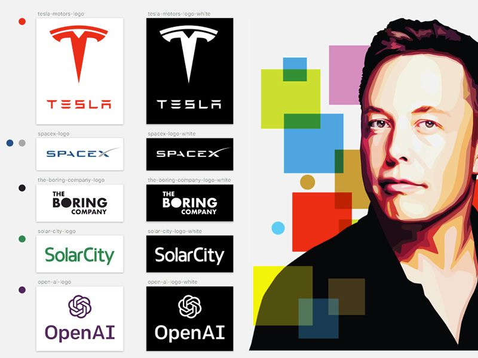

go to elon musk wikipedia
BUISNESS CAREER
Space X
In 2001, Musk became involved with the nonprofit Mars Society. He was inspired by plans to place a growth-chamber for plants on Mars and discussed funding the project himself. In October 2001, Musk traveled to Moscow to buy refurbished Intercontinental ballistic missiles (ICBMs) that could send the greenhouse payloads into space. He met with companies NPO Lavochkin and Kosmotras; however, Musk was seen as a novice and was even spat on by one of the Russian chief designers. The group returned to the United States empty-handed. In February 2002, the group returned to Russia to look for three ICBMs. They had another meeting with Kosmotras and were offered one rocket for $8 million, which Musk rejected. Musk instead decided to start a company that could build affordable rockets. With $100 million of his early fortune, Musk founded Space Exploration Technologies Corp., traded as SpaceX, in May 2002. As of 2021, he remains the company's CEO and also holds the title of Chief Engineer.
SpaceX attempted their first launch of the Falcon 1 rocket in 2006, and although the rocket failed to reach Earth orbit, they were awarded a Commercial Orbital Transportation Services program contract from NASA later that year. After two more failed attempts, which reportedly caused Musk so much stress that he was "waking from nightmares, screaming and in physical pain," SpaceX succeeded in launching the Falcon 1 into orbit in 2008, making it the first private liquid-fuel rocket to do so. Later that year, SpaceX received a $1.6 billion Commercial Resupply Services program contract from NASA for 12 flights of its Falcon 9 rocket and Dragon spacecraft to the International Space Station, replacing the Space Shuttle after its 2011 retirement. In 2012, the Dragon vehicle berthed with the ISS, a first for a private enterprise. Working towards its goal of reusable rockets, in 2015, SpaceX successfully landed the first stage of a Falcon 9. Landings were later achieved on an autonomous spaceport drone ship, an ocean-based recovery platform. In 2018, SpaceX launched the Falcon Heavy; the inaugural mission carried Musk's personal Tesla Roadster as a dummy payload. In 2017, SpaceX unveiled its next-generation launch vehicle and spacecraft system, Big Falcon Rocket, later renamed to Starship, which would support all SpaceX launch service provider capabilities. In 2018, SpaceX announced a planned 2023 lunar circumnavigation mission, a private flight called dearMoon project. In 2020, SpaceX launched its first crewed flight, the Demo-2, becoming the first private company to place a person into orbit and dock a crewed spacecraft with the ISS.
SpaceX began development of the Starlink constellation of low Earth orbit satellites in 2015 to provide satellite Internet access, with the first two prototype satellites launched in February 2018. A second set of test satellites and the first large deployment of a piece of the constellation occurred in May 2019, when the first 60 operational satellites were launched. The total cost of the decade-long project to design, build, and deploy the constellation is estimated by SpaceX to be about $10 billion.
Tesla
Tesla, Inc.—originally Tesla Motors—was incorporated in July 2003 by Martin Eberhard and Marc Tarpenning, who financed the company until the Series A round of funding. Both men played active roles in the company's early development prior to Musk's involvement. Musk led the Series A round of investment in February 2004; he invested $6.5 million, became the majority shareholder, and joined Tesla's board of directors as chairman. Musk took an active role within the company and oversaw Roadster product design but was not deeply involved in day-to-day business operations. Following a series of escalating conflicts in 2007 and the 2008 financial crisis, Eberhard was ousted from the firm. Musk assumed leadership of the company as CEO and product architect in 2008. A 2009 lawsuit settlement with Eberhard designated Musk as a Tesla co-founder, along with Tarpenning and two others . As of 2019, Elon Musk is the longest tenured CEO of any automotive manufacturer globally.
Tesla first built an electric sports car, the Roadster, in 2008. With sales of about 2,500 vehicles, it was the first serial production all-electric car to use lithium-ion battery cells. Tesla began delivery of its four-door Model S sedan in 2012; a cross-over, the Model X was launched in 2015. A mass market sedan, the Model 3 was released in 2017. As of March 2020, it is the world's best-selling electric car, with more than 500,000 units delivered. A fifth vehicle, the Model Y crossover, was launched in 2020. The Cybertruck, an all-electric pickup truck, was unveiled in 2019. Under Musk, Tesla has also constructed multiple lithium-ion battery and electric vehicle subassembly factories, such as Gigafactory 1 in Nevada and Gigafactory 3 in China.
Musk at the 2019 Tesla annual shareholder meeting
Since its initial public offering in 2010, Tesla stock has risen significantly; it became the most valuable carmaker in summer 2020. It entered the S&P 500 later that year. In October 2021 it reached market capitalization of $1 trillion, the sixth company to do so in U.S. history. On November 6, 2021, Musk proposed on Twitter selling 10% of his Tesla stock, since "much is made lately of unrealized gains being a means of tax avoidance". After more than 3.5 million Twitter accounts supported the sale, Musk sold $6.9 billion of Tesla stock in the week ending November 12.

Neuralink
In 2016, Musk co-founded Neuralink, a neurotechnology startup company to integrate the human brain with AI. Neuralink's purpose is to create devices that are embedded in the human brain to facilitate the merging of the brain with machines. The devices will also reconcile with the latest improvements in artificial intelligence to stay updated. Such improvements could enhance memory or allow the devices to communicate with software more effectively.
At a live demonstration in August 2020, Musk described one of their early devices as "a Fitbit in your skull" that could soon cure paralysis, deafness, blindness, and other disabilities. Many neuroscientists and publications criticized these claims; MIT Technology Review described them as "highly speculative" and "neuroscience theater".

The Boring Company
In 2016, Musk founded The Boring Company to construct tunnels. In early 2017, they began discussions with regulatory bodies and initiated construction of a 30-foot (9.1 m) wide, 50-foot (15 m) long, and 15-foot (4.6 m) deep "test trench" on the premises of SpaceX's offices as it required no permits. A tunnel beneath the Las Vegas Convention Center was completed in early 2021. Local officials have approved further expansions of the tunnel system.
As a merchandising and publicity stunt, The Boring Company sold 2,000 novelty flamethrowers in 2018. The idea was allegedly inspired by the Mel Brooks-directed film Spaceballs (1987).
Zip 2
In 1995, Musk, Kimbal, and Greg Kouri founded web software company Zip2 with funds from angel investors. They housed the venture at a small rented office in Palo Alto. The company developed and marketed an Internet city guide for the newspaper publishing industry, with maps, directions, and yellow pages. Musk says that before the company became successful, he could not afford an apartment and instead rented an office and slept on the couch and showered at the YMCA, and shared one computer with his brother. According to Musk, "The website was up during the day and I was coding it at night, seven days a week, all the time."[40] The Musk brothers obtained contracts with The New York Times and the Chicago Tribune, and persuaded the board of directors to abandon plans for a merger with CitySearch. Musk's attempts to become CEO, a position held by its Chairman Rich Sorkin, were thwarted by the board. Compaq acquired Zip2 for $307 million in cash in February 1999. Musk received $22 million for his 7-percent share.
And Some Others
About Elon Reeve Musk
Childhood And Family
Education
Business Career
Wealth of Elon Musk